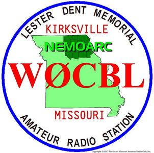
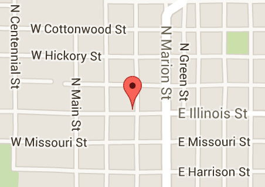

Welcome to the NEMOARC Webpage
We
are an Amateur Radio club in Northeast Missouri. We are
located in Adair county and have members from the
surrounding area. The station Call sign is W0CBL
We operate a
2meter repeater on 145.130-
Our club meets the second Sunday of every month at the Central Fire Station ready room 401N Franklin Kirksville MO
